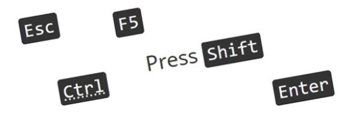

Code – Standard web pages – CRA web service manual
Use to emulate source code and display it in monospace font.
On this page
Design options
Inline code
Use to emulate snippets of code (such as HTML) within a regular sentence.
Appearance
Your text <a href="#">link</a> more text.
HTML code
<p>Your text <code><a href="#">link</a></code> more text.</p>
Coding considerations:
- Wrap snippets (one line or less) of code within a
<code>tag - Ensure to use ASCII code so the code example renders properly:
- Opening brackets (
<) =< - Closing brackets(
>) => - Opening quote (
") ="
- Opening brackets (
Prototyping libraries
The following prototyping libraries are currently being developed and will be available to download once the CRA web service manual is officially launched:
- Axure library
- Figma UI kit
Code block (prettify)
Use to emulate multiple lines (blocks) of code (such as HTML).
Appearance
<div class="row">
<div class="col-md-12">
<p>Your content...</p>
</div>
</div>
<div class="row">
<div class="col-md-12">
<p>Your content...</p>
</div>
</div>
HTML code
<div class="wb-prettify">
<pre><code>
<div class="row">
<div class="col-md-12">
<p>Your content...</p>
</div>
</div>
</code></pre>
</div><div class="wb-prettify">
<pre class="linenums"><code>
<div class="row">
<div class="col-md-12">
<p>Your content...</p>
</div>
</div>
</code></pre>
</div>
Coding considerations:
- Apply
class="wb-prettify"on a<div>around the code block. - Apply
class="all-pre wb-prettify"on a<div>around all the code of your page, to prettify all<pre>. - Apply
class="linenums"to a<pre>or<code>element to add line numbers. Alternatively useclass="wb-prettify linenums"to apply line numbers to all applicablepreelements on the page. Specify the starting number by addinglinenums:#beforelinenums. - Ensure to use ASCII code so the code example renders properly:
- Opening brackets (
<) =< - Closing brackets(
>) => - Opening quote (
") ="
- Opening brackets (
Prototyping libraries
The following prototyping libraries are currently being developed and will be available to download once the CRA web service manual is officially launched:
- Axure library
- Figma UI kit
Complementary components and functions
Additional add-on features and behaviours are available.
-
